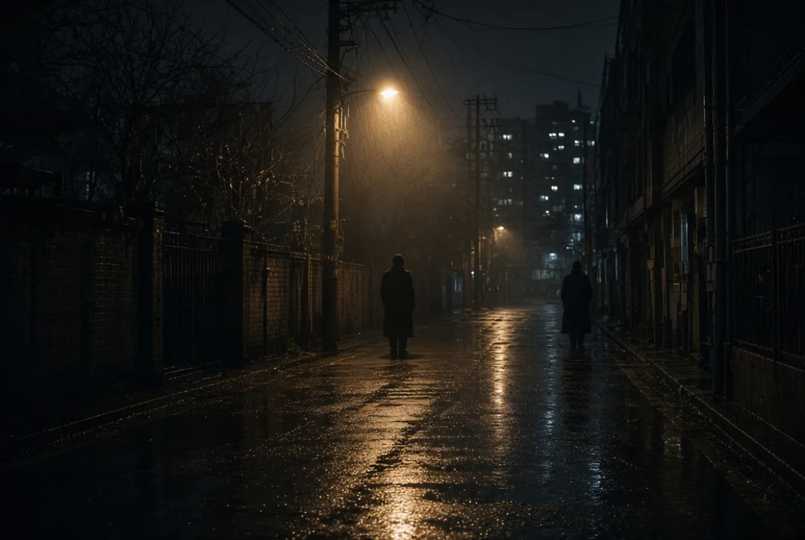
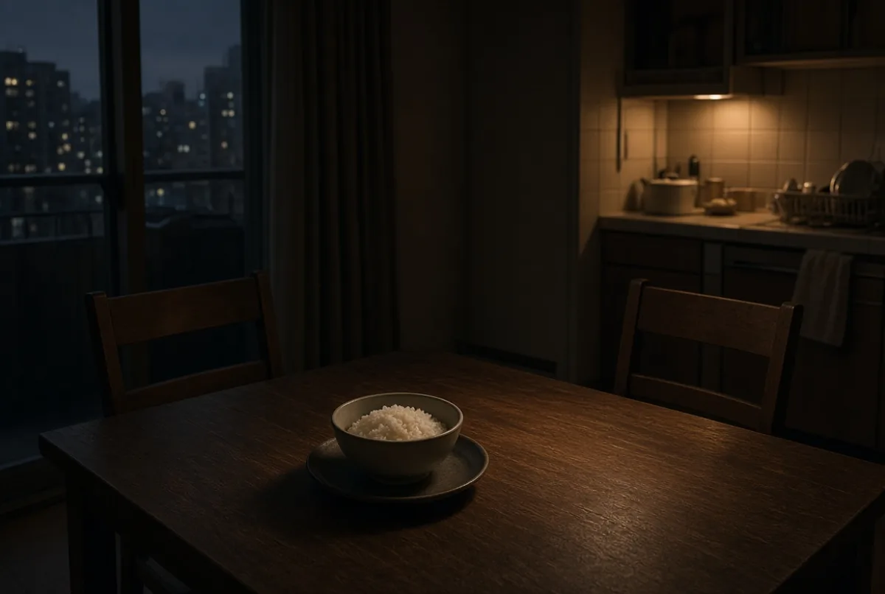
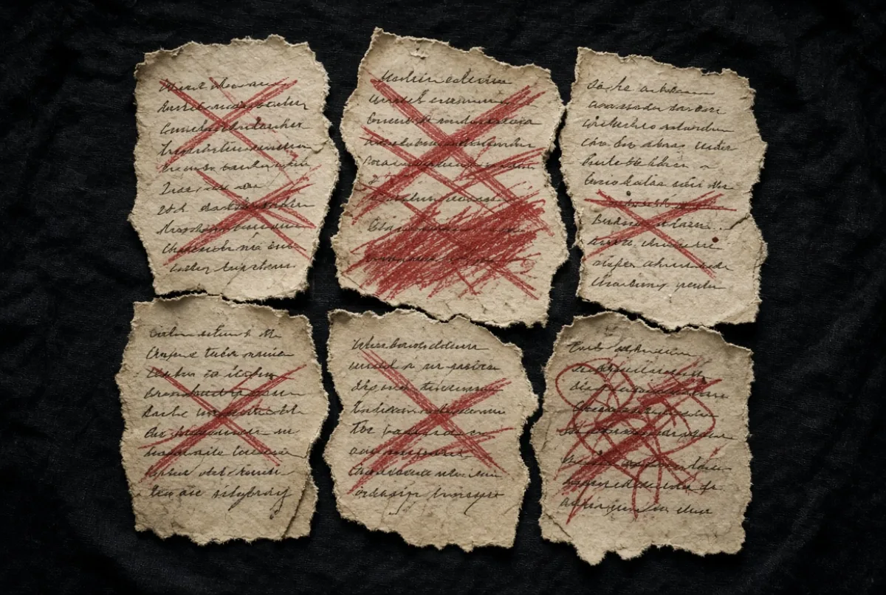
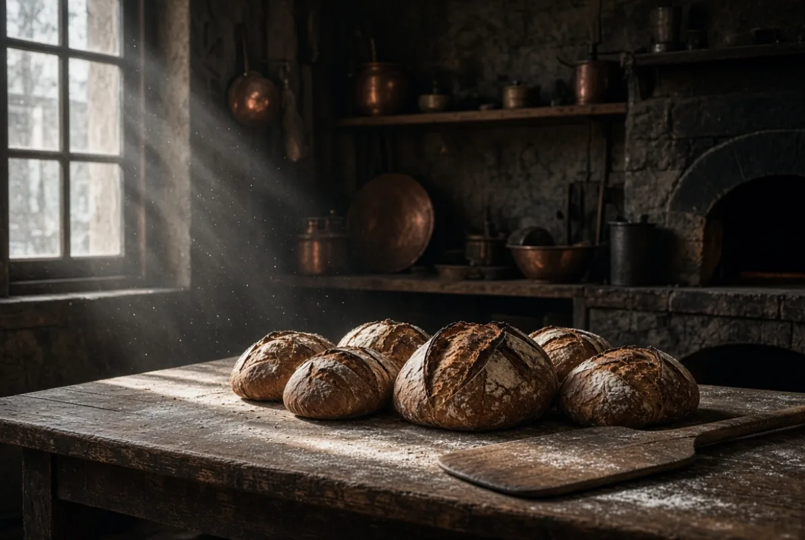
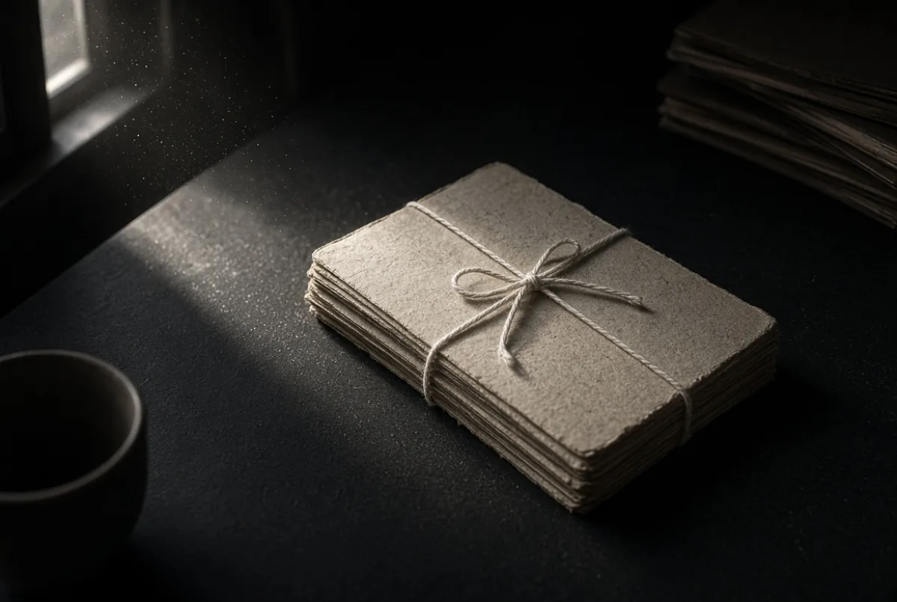

Life Archive · Storytelling · 2026
브라더의
두 번째 인생
삶의 경험을 이야기로 기록하는 개인 창작 프로젝트
기록 · Notes
기억이 글이 되기 직전한 사람의 삶, 하나의 아카이브
《브라더의 두 번째 인생》은 한 사람의 삶에 축적된 경험과 기억을 소설·단편·에세이·사진·그림으로 기록하고 재해석하는 개인 아카이브 프로젝트다.
젊은 시절의 사랑과 인간관계, 군대에서 겪었던 사건들, 직장생활과 사업, 결혼과 가족, 두 아이를 키우며 경험한 교육과 선택, 그리고 60대 이후 다시 시작하는 삶까지. 지나온 시간을 회고록이 아니라 하나의 이야기로 재구성한다.
장편소설 · Love
얼굴을 보여주지 않는다거리와 불빛만 남긴다

사랑과 여성 · 장편소설
사랑과 여성에 관한 이야기
살면서 만났던 인연과 관계를 바탕으로, 경험을 소설의 원재료로 삼아 인물·시간·장소·사건을 재구성하고 필요한 허구를 더한다.
“사람은 왜 사랑하고, 왜 헤어지고, 왜 어떤 사람을 평생 기억하는가.”
단편소설집 · Army
폭력 없이, 새벽과 산만막사 실루엣과 어두운 능선
군대생활 · 단편소설집
군대에서의 경험
상관과 부하, 동료와 우정, 갈등, 두려움, 젊은 남자들의 허세, 황당하고 웃긴 사건. 군대라는 특수한 공간의 인간관계와 사건은 그 자체로 강력한 소재다.
사건의 핵심과 당시의 감정을 살려 문학적으로 각색한다.
에세이 · Family
사람이 아니라 빈 자리결혼 · 가족 · 교육 · 성장

결혼 · 가족 · 교육 · 에세이
실제 삶에 대한 기록
결혼생활, 회사생활, 부모로서의 삶, 자녀교육, 해외 조기유학, 경제적 부담과 선택. 특히 두 아들의 성장 과정은 이 프로젝트의 중요한 축이다.
“부모는 아이를 어디까지 이끌고, 어디에서 아이에게 인생을 맡겨야 하는가.”
원칙 · Rebuild
경험은 소설이 아니다사실의 복사가 아니라 감정을 살리는 것

경험 ≠ 소설
실제 경험을 그대로 옮기는 것이 목적이 아니다. 경험 속에 있었던 감정과 인간의 모습을 살리는 것이 중요하다. 실제 사건에 허구를 더할 수도, 여러 사람의 경험을 하나의 등장인물로 통합할 수도 있다.
경험
Experience
살아오며 겪은 사건 그 자체
기억
Memory
남은 장면과 감정, 그리고 망각
해석
Interpretation
지금의 시선으로 과거를 다시 보기
재구성
Reconstruction
인물·시간·장소·사건을 다시 엮기
이야기
Story
보편의 질문으로 확장된 창작물
The Brother
브라더
삶을 제공한다
- 기억을 꺼낸다
- 경험했던 사건을 자신의 언어로 이야기한다
- 당시의 감정을 설명한다
- 무엇이 실제이고 무엇이 해석인지 구분한다
The AI
AI
이야기로 변환한다
- 이야기의 핵심을 발견한다
- 사건의 구조를 분석하고 등장인물을 구성한다
- 갈등과 긴장 구조를 만든다
- 문학적 문장으로 완성한다
브라더는 삶을 제공하고, AI는 그것을 이야기로 변환한다.
방법 · Five Questions
다섯 가지 질문모든 이야기를 처음부터 완벽하게 정리할 필요는 없다
한 사람에 대한 기억이라면 다섯 가지만 기록한다. 그리고 마지막 질문에서 소설의 주제가 발견될 가능성이 가장 높다.
만남Meeting
언제, 어디에서, 어떻게 만났는가.
관계Relationship
어떤 관계로 발전했는가.
기억에 남는 사건Memorable Moments
특별히 기억나는 사건 2~5개.
결말Ending
어떻게 관계가 끝났는가.
현재의 감정Present Feeling
수십 년이 지난 지금 그 사람을 생각하면 무엇이 남아 있는가.
“왜 나는 아직도 그 사람을 기억하는가?”
이 질문에서 소설의 주제가 발견될 가능성이 높다.
시간축 · Timeline
한 사람의 길세 개의 장르, 하나의 시간축
사랑
장편소설
군대
단편소설집
직장
에세이
결혼
에세이
자녀
에세이
사업
회고·에세이
현재
두 번째 인생
“한 남자가 사람을 만나고, 사랑하고, 일하고, 가족을 만들고, 아이들을 키우고,
실패하고, 다시 자신의 삶을 시작하는 이야기.”
현재 · The Second Life
문을 열기 전, 빵을 굽는 시간현재의 삶도 이야기의 일부다

현재의 브라더는 다시 새로운 삶을 만들고 있다. 호야당이라는 빵집을 운영하고, 건물관리 일을 하며, 사진을 찍고, 그림을 그리고, 유튜브를 시작하고, 영어를 공부하고, 여행을 계획한다.
과거를 새로운 시선으로 바라보고, 남은 삶을 자신의 방식으로 다시 창작하는 시간이다.
시각 · Visual
사진과 그림글과 이미지가 서로 연결된다
결국 글과 사진과 그림이 서로 연결된다. 한 사람의 기록은 문장과 이미지가 한 몸을 이룬다.
Story
이야기
- 장편소설 — 사랑과 여성에 관한 이야기
- 단편소설집 — 군대에서의 경험
Essay
인생 에세이
- 결혼 · 회사 · 가족
- 자녀교육 · 해외유학 · 부모의 선택
Visual
사진 · 그림
- 사진 — 서울의 기록 · 전국 여행 · 사람과 장소
- 그림 — 기억 속 장소 · 사진을 회화로 재해석
목표 · First Draft
원고 한 편거창한 책부터 시작하지 않는다

첫 번째 이야기 하나를 완성한다. 여성에 관한 이야기일 수도, 군대 이야기일 수도 있다. 한 편을 완성한 뒤 다시 읽어본다.
책은 그 결과로 만들어지는 것이다.
더 중요한 것은, 한 사람이 살아온 시간이 사라지지 않는 것이다. 아이들에게는 아버지가 살아온 이야기가 남고, 브라더 자신에게는 지나온 삶을 다시 바라볼 기회가 생긴다.
그리고 누군가가 훗날 이 기록을 읽었을 때, “나도 비슷한 경험이 있었는데.” 라고 생각할 수 있다면 그것으로 충분히 의미 있는 이야기가 된다.
Epilogue
삶은 지나가지만,
이야기는 남는다.
— 오늘이 가장 젊은 날이다.